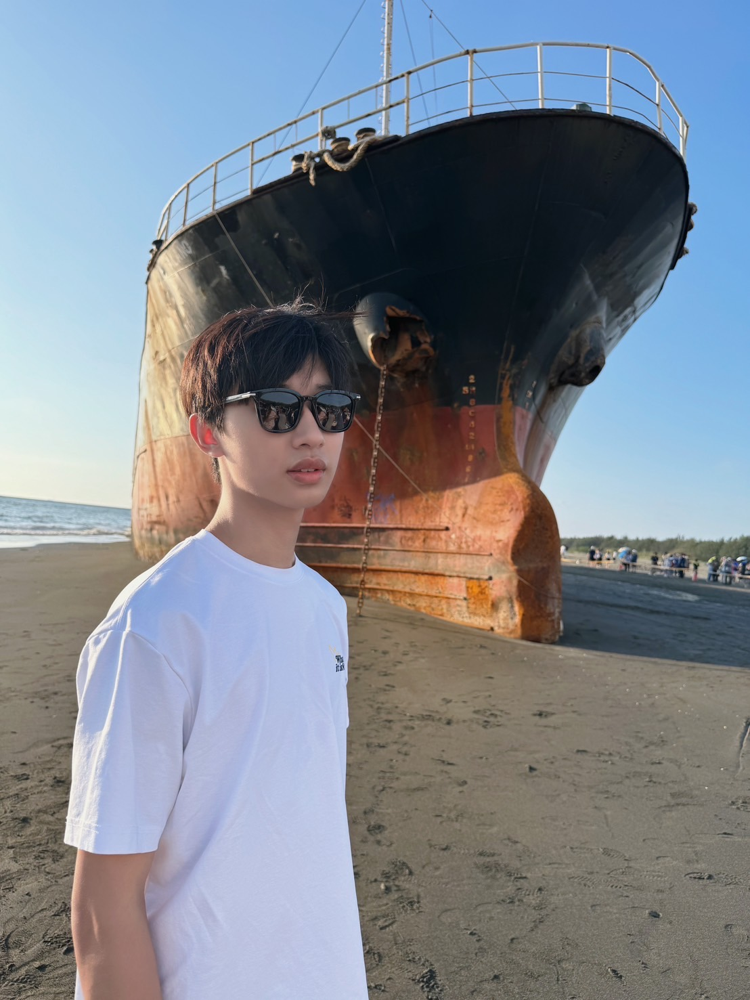

首頁
關於我
研究
作業
water puzzle
react app
林秉毅
南臺科技大學 學生
教室:D201
學號:5B1G0025
E-mail: 5b1g0025@stusts.edu.tw

學歷
南臺科技大學 在學
南臺科技大學 資訊工程系
林秉毅 履歷
姓名：林秉毅
性別：男
出生年月日:2007 年 4 月 13 日
學歷:南台科技大學 五專部 資訊工程科（在學）
專長:JavaScript、React、Node.js
語言能力：英檢初級
聯絡方式：
電話:0900-000-000
Email:5b1g0025@stust.edu.tw
自傳:我目前就讀於南台科技大學五專部資訊工程科，對資訊技術領域充滿興趣，尤其在程式設計與網站開發方面特別投入。平時有使用 Python、C、HTML/CSS/JavaScript 的經驗，也曾經透過 Flask 架設個人網頁並成功上線，熟悉基本的前後端整合流程。 在校期間積極參與專題製作與實作課程，注重實作與團隊合作精神，並樂於主動學習與解決問題。個性穩重踏實，遇到困難會主動查詢資料並反覆嘗試，具備良好的自學能力與責任感。 未來希望能夠累積更多實務經驗，尋找有關網站開發、資訊管理或網路應用相關的工作機會，提升自身實力並應用所學。
心得
這次期末報告，我把一整學期學到的 HTML / CSS 全都塞進「關於我的二三事」這個小網站。最先著手的是導覽列：用 flexbox 把六個連結排成等距、再加上金色邊框和 hover 時微微浮起的 transform，視覺瞬間比單純文字高級許多。背景原本只打算用單色，改成 linear-gradient 後，整個畫面有了深淺層次，也讓卡片更突出。 Profile 卡片算是我改版最多次的區塊。為了讓文字和照片永遠同一行，我最後選擇用 table 搭配 ul 結構，並用 border-radius 和 box-shadow 做出卡片感。雖然 div 也能排版，但 table 在固定欄寬時更省事。調 margin、padding 時，我幾乎是按一次 F5 就微調一個像素，也因此終於體會到「像素眼」的樂趣與痛苦。 我還把之前做的 Water Puzzle 和 React App 連到導覽列，當成小型作品集；整合時才驚覺自己已經學會 link/visited 顏色控制、按鈕動畫、透明 navbar 等細節。整個網頁都用純 HTML/CSS 完成，沒有一行 JavaScript，卻也能呈現出層次與互動感，這讓我更有信心。下一步想挑戰加夜間模式切換，試著把 JS 與 CSS 變數結合，讓網站更完整。